十、从0开始卷出一个新项目之瑞萨RZN2L rzn-fsp v2.0.0 Release Notes:
一、概述
二、Github地址
https://github.com/renesas/rzn-fsp/releases
三、 Features Added
3.1 Developer Assistance feature support added.
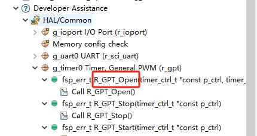
3.2 Multiplex interrupts support added.
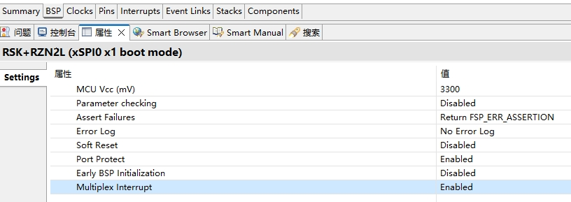
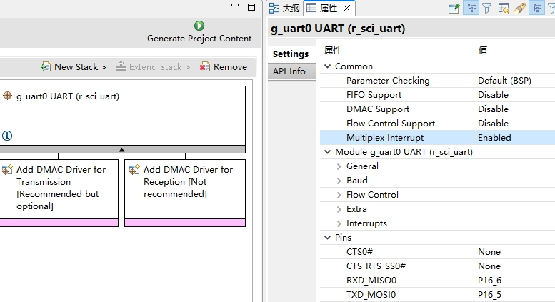
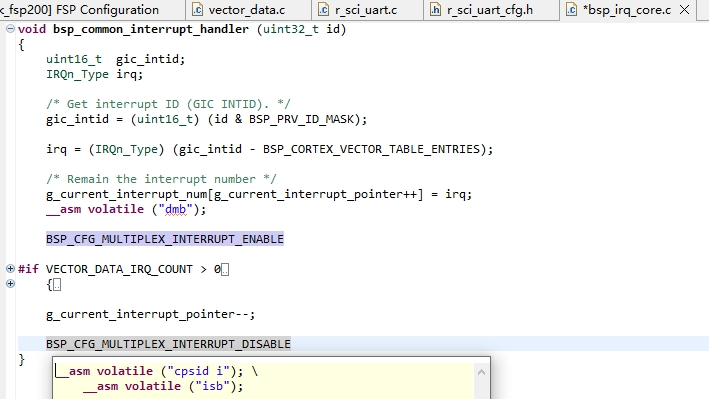
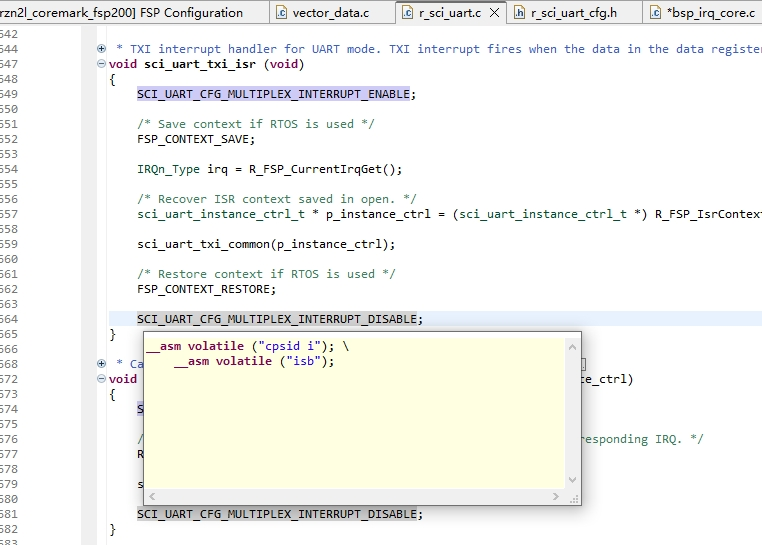
- Realtime refresh feature in e² studio？？？
- Common FSP API support updated to v1.4.0
- R_DMAC_Reload and R_DMAC_CallbackSet APIs support added to DMAC (r_dmac).
- HyperBus driver support added (r_hyperbus).
- Select operating clock support added to SCI_UART (r_sci_uart).
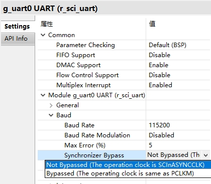
- Bypass feature support added to SCI_UART (r_sci_uart).
- Select operating clock support added to SPI (r_spi).
- Bypass feature support added to SPI (r_spi).
- PCLKM as clock source support added to CANFD (r_canfd).
- USB_HMSC driver support added (r_usb_hmsc).
- BLOCK_MEDIA_USB middleware support added (rm_block_media_usb).
- FreeRTOS+FAT middleware support added (rm_freertos_plus_fat).
四、Bug Fixes and Improvements
4.1 Added a noncache section for user applications.
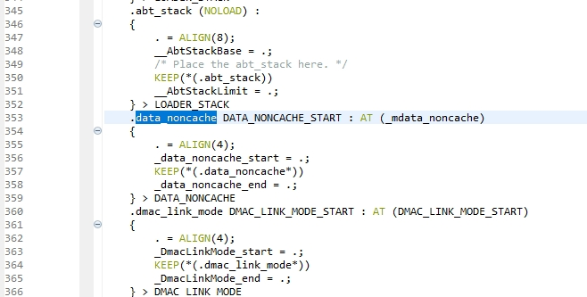
- Commonalized memory allocation by linker script for GCC and IAR compiler.
- Named anonymous structure for fsp pack version.
- Fixed a bug that the file size is large when outputting bin in an xSPI0 x1 boot project.
- Removed VersionGet function of each module.
bsp
- Added I/O region of led on board to the LED IOPORT pin array.
- Changed macro name to identify core.
- Renamed cache invalidation function.
- Renamed definition name and function name regarding master MPU.
4.2 Unified case of asm instructions in startup code.
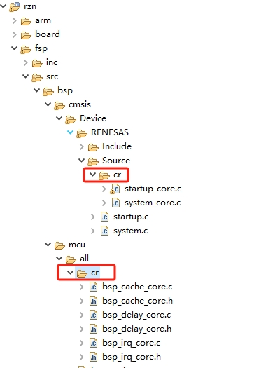

- Corrected a function description of the R_BSP_SoftwareDelay().
- Added a description of Memory Attributes to the FSP Documentation.
- Removed R_BSP_PinRead() and R_BSP_PinWrite().
- Added a function to get current I/O region settings of port pin.
- Renamed macro name for module reset.
- Fixed a bug that caused the output binary file size to become huge in the ROM boot project.
4.3 Changed so that software can be reset by only calling R_BSP_Reset.
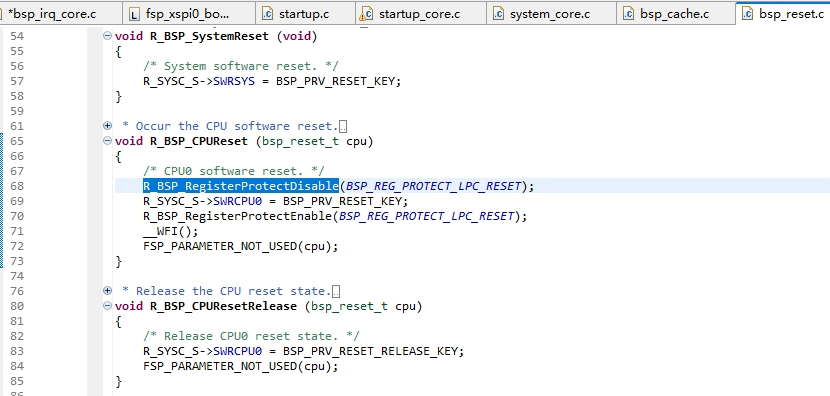
r_dmac
- Added null check when calling r_dmac callback function.
- Removed processing for edge interrupts.
r_bsc_sdram
- Corrected the process of disabling interrupts.
r_xspi_ospi
- Fixed a bug that could overwrite setting values of xSPI drive/sampling timing.
- Corrected typos of pull-up/down timing description on FSP Documentation.
- Added a note on the use of the R_XSPI_OSPI_Write() to the function description.
- Corrected typos of pull-up/down timing description on FSP Documentation.
- Added a note to FSP Documentation regarding the combination of xSPI_OSPI and xSPI_QSPI.
r_xspi_qspi
- Added a note on the use of the R_XSPI_QSPI_Write() to the function description.
r_adc
- Excluded some average mode settings that cannot be used in HW from drivers and configurations as well.
- Added ELC configuration.
r_dsmif
- Added ELC configuration.
r_cmt
- Fixed a bug that caused invalid arguments to be passed to functions related to interrupt disabling when interrupts are not used for CMT.
r_cmtw
- Changed the permission setting for input capture operation in Enable function.
- Fixed a bug that pins set to output disabled in R_CMTW_OutputDisable are output enabled in - R_CMTW_Start.
- Fixed a bug that caused invalid arguments to be passed to functions related to interrupt disabling when interrupts are not used for r_cmtw.
r_gpt
- Added ELC configuration.
- Integrated the functionalities of r_gpt_phase_count into r_gpt.
4.4 r_gpt_phase_count
- Unsupported.
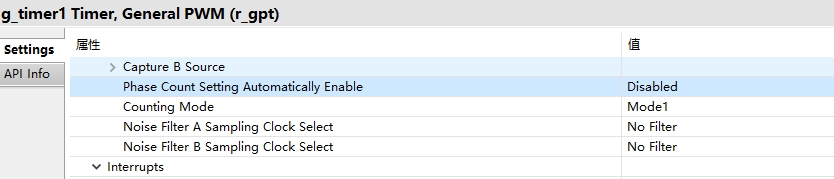
r_mtu3
- Added ELC configuration.
- Integrated the functionalities of r_mtu3_phase_count into r_mtu3.
- Fixed a bug that a warnings is displayed when the callback function is set and interrupts are disabled in configuration.
r_mtu3_three_phase
- Fixed a warning that occurs in the write enable and disable process.
r_mtu3_phase_count
- Unsupported.
r_sci_uart
- Fixed R_SCI_UART_BaudSet to prevent unrelated values from being changed.
Corrected parameter check process. - Updated to disallow use of DMAC p_callback when DMAC is linked.
4.5 Switched from software-based DE control to hardware-based DE control (Support RS485).
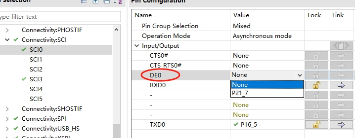
r_sci_i2c
- Fixed a bug that prevented some interrupts from being disabled in R_SCI_I2C_Close.
r_sci_spi
- Corrected parameter check process.
- Updated to disallow use of DMAC p_callback when DMAC is linked.
r_spi
- Implemented to prevent unnecessary interrupts during ISR.
- Corrected parameter check process.
- Updated to disallow use of DMAC p_callback when DMAC is linked.
r_iic_master
- Corrected parameter check process.
- Fixed a bug in stop condition detection by Abort function.
r_iic_slave
- Removed unused slave_busy flag.
4.6 r_gmac
- Corrected the amount of bit shift in Second Address Chained.
- When receiving IEEE802.3 frames (when Length/Type field = Length), a problem in which FCS (4bytes) is added to the received data length and notified has been corrected.
- Fixed a bug that the driver may hang up when the Ether cable is unplugged during high-load communication.
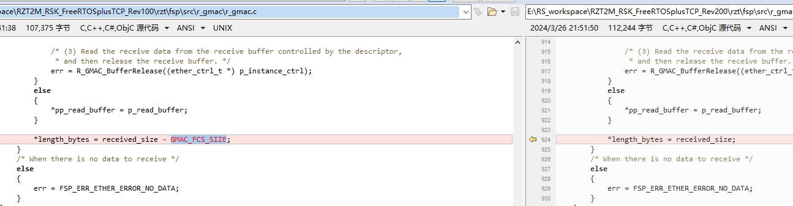
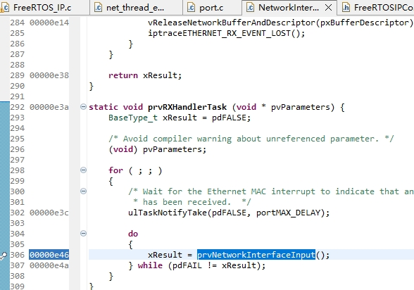
https://github.com/FreeRTOS/FreeRTOS-Plus-TCP/blob/main/source/portable/NetworkInterface/STM32Fxx/NetworkInterface.c#L1056
https://community.renesas.com/mcu-mpu/ra/f/forum/30872/freertos-tcp-2-2-1---possible-bug-in-prvrxhandlertask-and-prvnetworkinterfaceinput-results-in-delay-in-udp-receive
https://community.renesas.com/mcu-mpu/ra/f/forum/30906/fixed-serious-bug-in-freertos-tcp-port-code-networkinterface-c